Префектура Тотиги · Масико · керамика
Гончары Масико: три мастера и места, где можно увидеть их посуду
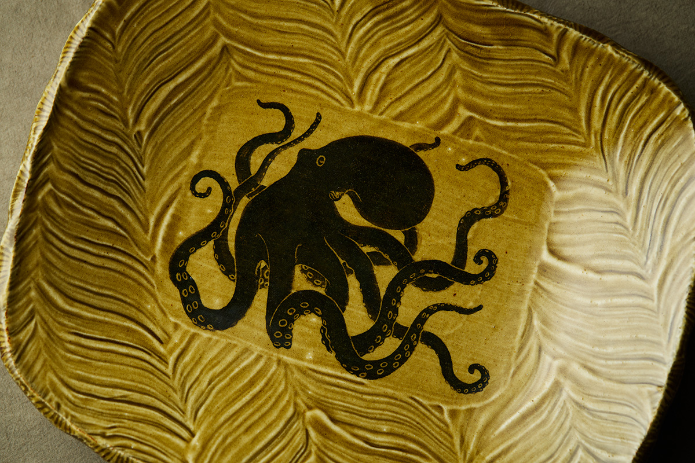
Гончары съезжаются в Масико со всей Японии, и у каждого свой путь к глине. Три мастера этого города работают по-разному, но их посуду можно увидеть и купить прямо в Масико: в семейном магазине, в галерее при мастерской и в старой лавке среди полей.
Город
Масико после Хамады
Керамику в Масико начали делать в 1853 году, и долго здесь обжигали простую утварь вроде глиняных чайников. Всё изменилось в 1924 году, когда в город переехал Сёдзи Хамада (1894–1978), гончар, один из основателей движения мингэй, позже признанный «живым национальным сокровищем». Он соединил приёмы, освоенные в Киото, на Окинаве и в Англии, с местной глиной и глазурями, и вслед за ним в Масико потянулись гончары со всей страны. Подробнее о городе, музее Хамады и ярмарке керамики рассказывает статья о Масико.
Среди мастеров Масико есть и потомки семей, осевших здесь после войны, и те, кто приехал издалека. Ниже трое из них, чью посуду можно увидеть в самом Масико: Симпэй Фукусима, Вакахико Исикава и Ёсихиса Окамото.
Роспись
Симпэй Фукусима: керамика Масико, какой она могла бы стать
Симпэй Фукусима родился в Масико в 1983 году. Он окончил отделение скульптуры художественного университета в Канадзаве, затем учебный центр керамики префектуры Тотиги и учился у своего отца, тоже гончара. Его дед переехал в Масико после войны, а гончарами стали отец и сын, поэтому мастерская Фукусимы не принадлежит к старым гончарным домам города.
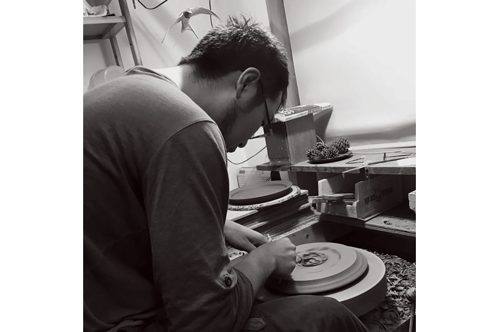
Отсюда и главный вопрос, который он задаёт себе: какой стала бы керамика Масико, если бы в городе не было движения мингэй? В 1920-х годах философ Мунэёси Янаги (1889–1961) призвал ценить простые и красивые вещи, сделанные безымянными ремесленниками. Жители Масико увлеклись Хамадой, который вёл это движение, и стали подражать его посуде.
«Когда дед переехал в Масико после войны, движение мингэй было на пике, и все, очарованные Хамадой, повторяли его керамику. Появились новые приёмы: например, коричневую глазурь „амэ“, которой раньше покрывали только кувшины и вазы, стали использовать для посуды. Зато многие способы украшения почти вышли из употребления»
Симпэй Фукусима
Сам Фукусима начинал с того, что копировал росписи английского гончара Бернарда Лича (1887–1979), соратника Хамады. Но в семье решили, что раз их мастерская не из старых, то и делать надо не «под Хамаду». Так появился его стиль: традиционная керамика Масико из параллельного мира. Привычная для города толстая, «пухлая» посуда ему не нужна, и для более строгой формы он добавляет в местную глину около 20% глины из Сигараки в префектуре Сига. Сверху он накладывает сразу несколько старых приёмов: «окна» с росписью, рифление «синоги» и обливание жидкой глиной.
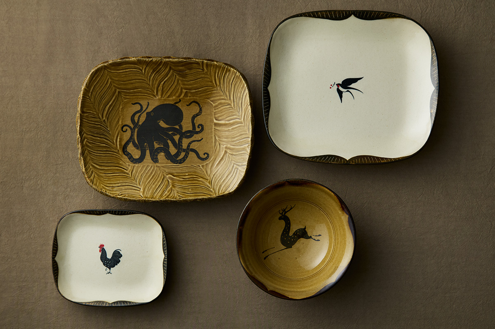
Рисовать он любил с детства и потому в университете нарочно выбрал скульптуру, чтобы отучиться видеть вещи плоскими. Посуда с его росписью на ярмарках керамики разлетается одной из первых.
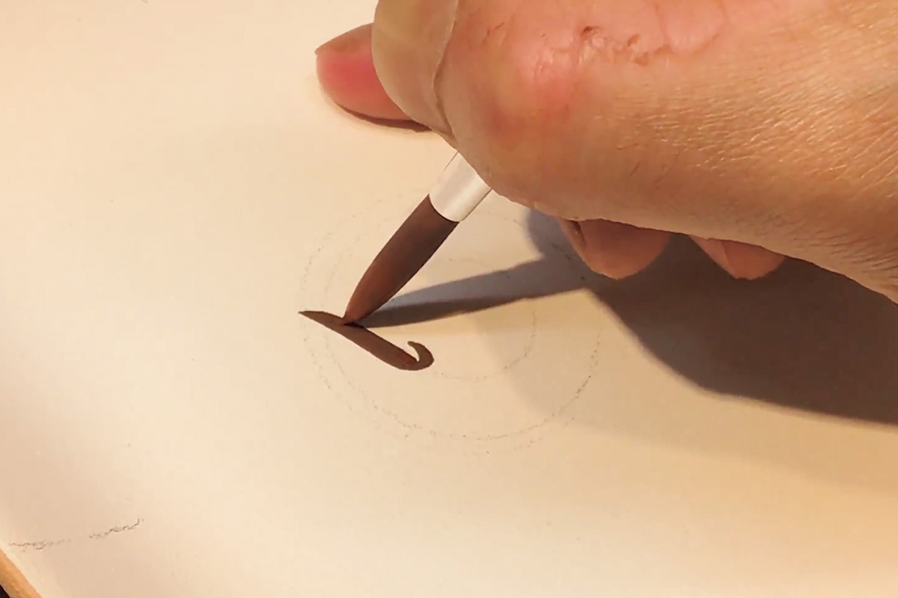
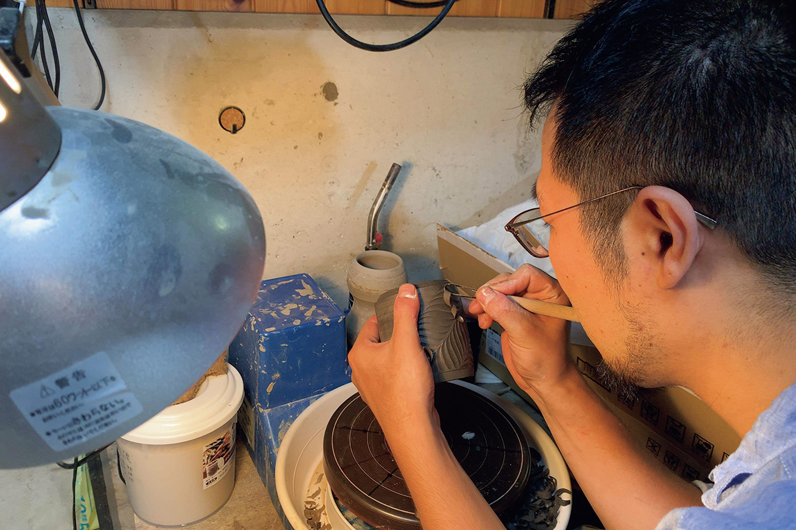
Обливание жидкой глиной он делает чаще всего. Кроме тех, кто расписывает посуду, этим приёмом в Масико почти никто не пользуется, а Фукусима хочет развивать его и дальше, оставляя на глине следы кисти «хакэмэ».
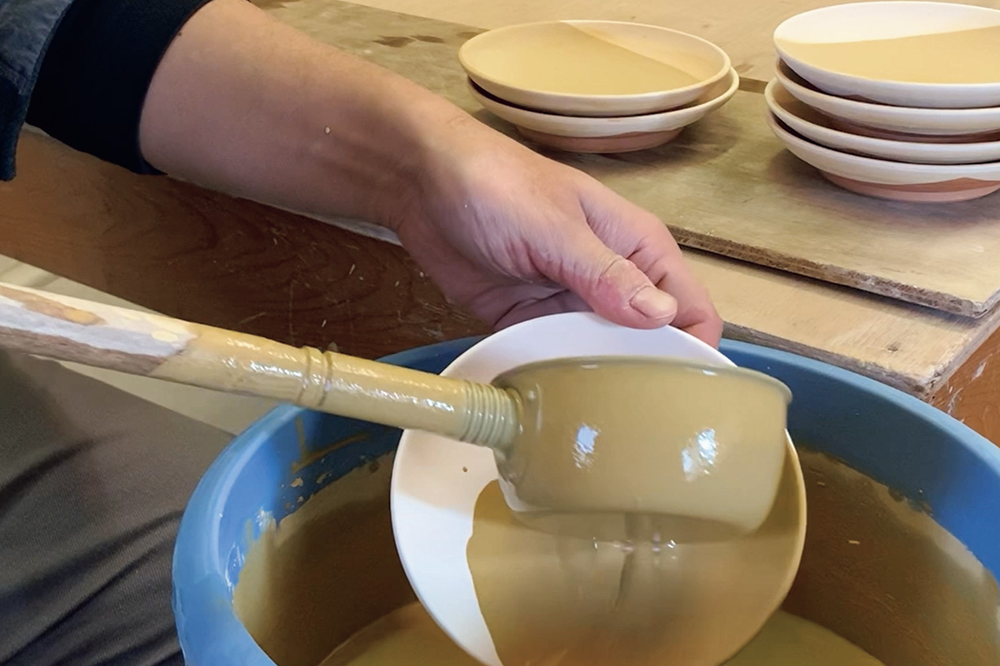
Ручку с удобным для пальцев наклоном и ножку такой высоты, чтобы миску было легко поднять, он продумывает до мелочей. По его словам, такие вещи рождаются только «в руках», а если думать о дизайне за столом, посуда быстро теряет своё назначение.
«В Масико легко прийти новым мастерам, и сюда одна за другой приезжают молодые люди со страстью и талантом. На одном вкусе и таланте не выиграешь, поэтому мы с отцом делаем трудоёмкие, нарядные вещи, которые притягивают взгляд»
Симпэй Фукусима
Посуду Фукусимы продаёт семейный магазин «Масикояки Фукусима» на улице Дзёнайдзака.
«Масикояки Фукусима»
- Адрес
- префектура Тотиги, уезд Хага, Масико, Дзёнайдзака, 109
- Телефон
- +81 285-72-0363
- Часы работы
- 11:00–17:00
- Выходные
- пятница
Мастерская
Вакахико Исикава и waka studio
Вакахико Исикава родился в Токио в 1960 году. В двадцать с небольшим он делал рекламу в Токио, а когда графический дизайн ушёл в компьютер, понял, что больше этим заниматься не хочет.
«Мне, видимо, просто нравилось работать руками. Поэтому, когда графика стала цифровой, мне расхотелось ею заниматься»
Вакахико Исикава
Около 1990 года он налегке перебрался в Масико к сестре, которая вышла замуж в семью гончаров. Становиться гончаром он не собирался: просто казалось, что здесь можно что-то делать руками. Исикава пишет картины и работает с деревом, и слово «художник» подходит ему больше, чем «гончар». Его отец был скульптором, и в 2025 году все его родные по-прежнему занимались творчеством.
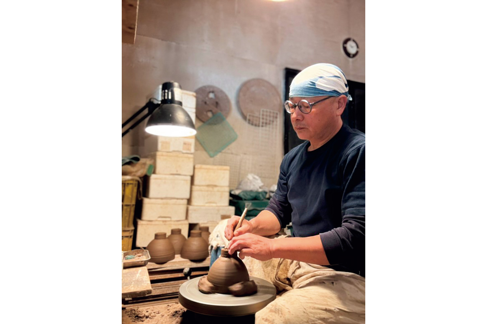
Его дом с мастерской и галереей, waka studio, стоит на окраине Масико, и он тоже стал одной из работ мастера. Исикава вместе с друзьями сам расчищал лес экскаватором, а окна брал от старых домов, которые где-то разбирали. Друзья строили дома по очереди, друг для друга.
«Строишь ты большое или маленькое, в конце концов это одна и та же работа руками»
Вакахико Исикава
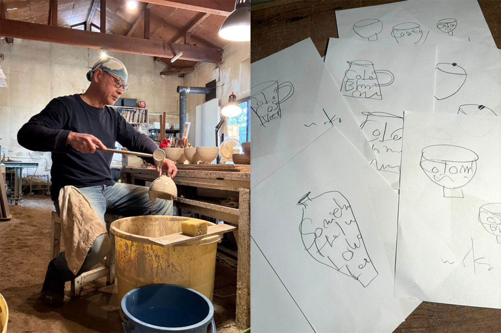
Его вещи рождаются из того, что попадается на глаза. Серия Beans, одна из самых известных, по его словам, не появилась бы, не устрой он однажды выставку в кофейне. После обжига посуду вымачивают в кофе, и она выглядит так, будто ей много лет. На стенках крупно написаны названия стран, где растёт кофе: Brazil, Cuba. Композиция смелая, но всё стоит на своих местах: сказывается опыт графического дизайнера.
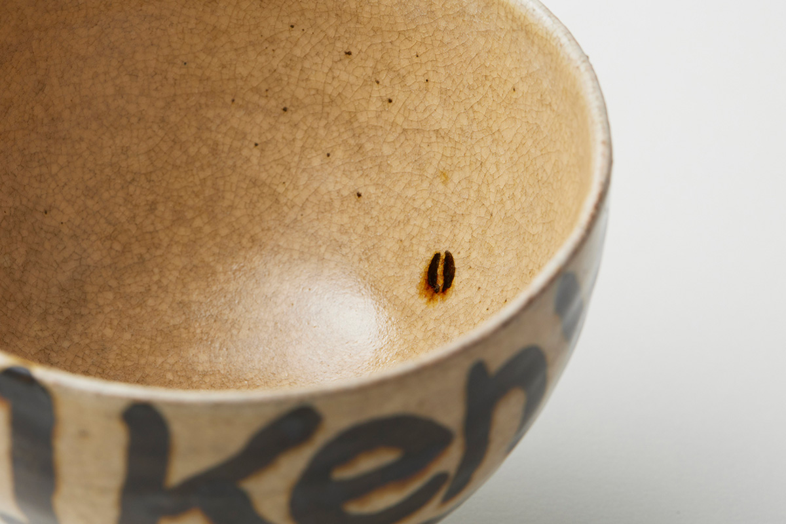
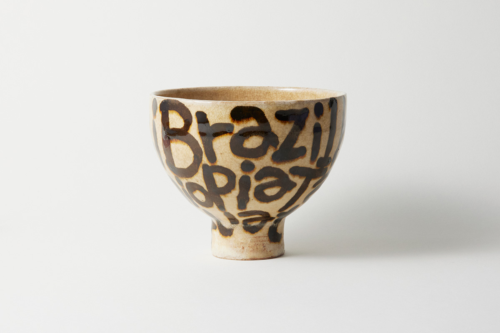
Из-за кофейной темы эти чаши хочется отдать под кофе с молоком, но сам мастер так не считает. На Новый год в семье Исикавы ели из Beans Bowl традиционный суп с рисовыми лепёшками.
«Меня спрашивают, для чего эта посуда. Да можно положить что угодно»
Вакахико Исикава
Сначала он делал посуду, сплошь покрытую рисунками, но, готовя сам, понял, что лучше простые вещи, которые не надоедают. Стиль его всё время меняется, и, говорит он, когда-нибудь Beans может просто закончиться.
Адреса и часов работы галереи waka studio в открытых источниках нет (проверено в 2026 году), поэтому о визите в мастерскую стоит договориться заранее.
Глазурь
Ёсихиса Окамото и рыжая «каки»
Ёсихиса Окамото родом с острова Авадзи в префектуре Хёго. Работая в офисе, он сходил на пробное занятие по гончарному делу, увлёкся, ушёл с работы и стал помощником в гончарной школе. Потом учился в Масико у одного из местных мастеров, а в 2000 году построил собственную печь.
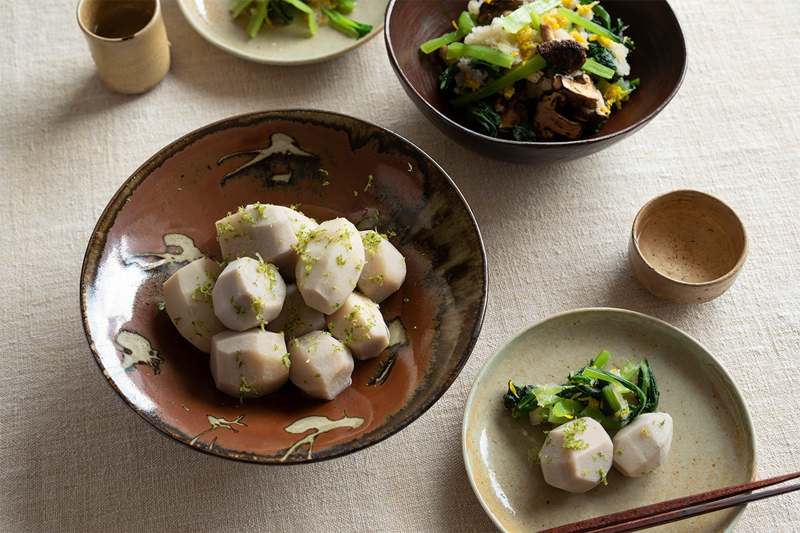
В Масико несколько традиционных глазурей, и одна из них «каки», то есть «хурма». Это железная глазурь, какие есть во многих гончарных краях. Особенность Масико в том, что для неё хватает одного местного камня асинума-иси, смолотого в порошок, и глазурь сама даёт светло-коричневый цвет хурмы. Раньше ею покрывали большие кувшины.
Когда Окамото стал работать сам, «каки» одно время считали старомодной, но потом мастера Масико, сами не сговариваясь, снова стали ею пользоваться. Раз в глазури один камень, разницы между гончарами почти не видно. Окамото добавляет больше прозрачной глазури, чтобы «каки» стекала и двигалась. Яркого оранжевого цвета, как у Хамады, ему, по его словам, добиться пока не удалось, а к переходам в чёрный, как ему кажется, подошёл близко.
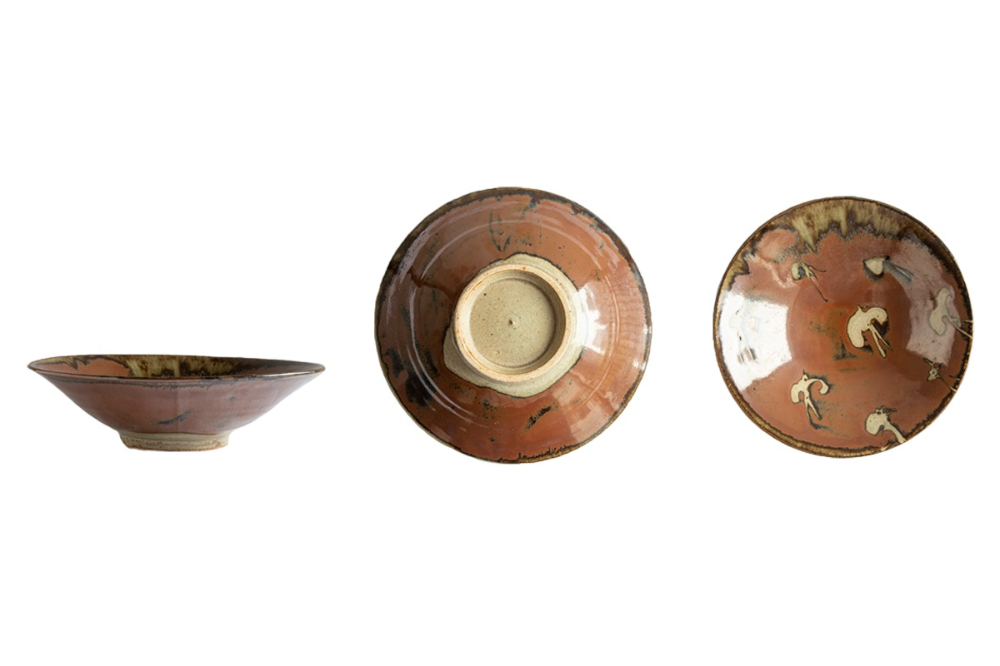
Стилист, купившая эту чашу в Масико, заметила, что она тоньше, чем обычно ждёшь от Масико, и в форме видна точная работа на круге. Птицы на дне сделаны трафаретом: этот приём Хамада тоже привёз из других краёв. Окамото работает с глиной и глазурями Масико, как и его предшественники, и в его чаше узнаётся старый Масико, только в более лёгком виде.
В 2020 году посуду Окамото продавала «Каноя», лавка в стороне от главной улицы, среди полей, откуда видны горы. Галерея в ней устроена в амбаре для зерна 1910 года постройки.
«Каноя»
- Адрес
- префектура Тотиги, уезд Хага, Масико, Масико, 3169-1
- Телефон
- +81 285-72-8717
- Часы работы
- 10:00–17:00
- Выходные
- четверг, пятница, иногда в другие дни
Ещё
Другие гончары Масико
В Масико работают и другие известные гончары, например супруги Гундзи, Рюити Хага, который сам копает глину и обжигает её в дровяных печах, и Косукэ Тэрамура с глазурями из золы, но сведений о том, что их мастерские принимают гостей, нет (проверено в 2026 году).
Фото: Ацуси Кондо, Сихо Акияма.